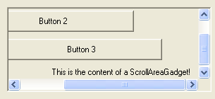

ScrollAreaGadget()
语法
Result = ScrollAreaGadget(#Gadget, x, y, Width, Height, ScrollAreaWidth, ScrollAreaHeight [, ScrollStep [, Flags]])概要
Creates a ScrollArea gadget in the current GadgetList. It is a container for other gadgets with a scrollable area.
参数
#Gadget A number to identify the new gadget. #PB_Any can be used to auto-generate this number. x, y, Width, Height The position and dimensions of the new gadget. ScrollAreaWidth, ScrollAreaHeight The dimensions of the scrollable area inside the gadget. These can also be smaller than the outer dimensions, in this case scrolling will be disabled. ScrollStep (optional) The amount of pixels to scroll when the user presses the scroll bar arrows. Flags (optional) Flags to modify the gadget behavior. It can be a combination of the following values: #PB_ScrollArea_Flat : Flat frame #PB_ScrollArea_Raised : Raised frame #PB_ScrollArea_Single : Single sunken frame #PB_ScrollArea_BorderLess : Without any border #PB_ScrollArea_Center : If the inner size is smaller than the outer, the inner area is automatically centered.
返回值
Returns nonzero on success and zero on failure. If #PB_Any was used as the #Gadget parameter then the return-value is the auto-generated gadget number on success.
备注
Once the gadget is created, all future created gadgets will be created inside the scroll area. When all the needed gadgets have been created, CloseGadgetList() must be called to return to the previous GadgetList. OpenGadgetList() can be used later to add others gadgets on the fly in the scroll area.
The following functions can be used to act on a ScrollAreaGadget:
GetGadgetAttribute(): With one of the following attribute:#PB_ScrollArea_InnerWidth : Returns the width (in pixels) of the contained scrollable area. #PB_ScrollArea_InnerHeight : Returns the height (in pixels) of the contained scrollable area. #PB_ScrollArea_X : Returns the current horizontal scrolling position (in pixels). #PB_ScrollArea_Y : Returns the current vertical scrolling position (in pixels). #PB_ScrollArea_ScrollStep : Returns the current scroll step value (in pixels).SetGadgetAttribute(): With one of the following attribute:#PB_ScrollArea_InnerWidth : Changes the width (in pixels) of the contained scrollable area. #PB_ScrollArea_InnerHeight : Changes the height (in pixels) of the contained scrollable area. #PB_ScrollArea_X : Changes the current horizontal scrolling position (in pixels). #PB_ScrollArea_Y : Changes the current vertical scrolling position (in pixels). #PB_ScrollArea_ScrollStep : Changes the current scroll step value (in pixels).This gadget supports the SetGadgetColor() and GetGadgetColor() functions with the #PB_Gadget_BackColor type to change the background color.
示例
If OpenWindow(0, 0, 0, 305, 140, "ScrollAreaGadget", #PB_Window_SystemMenu | #PB_Window_ScreenCentered) ScrollAreaGadget(0, 10, 10, 290,120, 375, 155, 30) ButtonGadget (1, 10, 10, 230, 30,"Button 1") ButtonGadget (2, 50, 50, 230, 30,"Button 2") ButtonGadget (3, 90, 90, 230, 30,"Button 3") TextGadget (4,130,130, 230, 20,"This is the content of a ScrollAreaGadget!",#PB_Text_Right) CloseGadgetList() Repeat Select WaitWindowEvent() Case #PB_Event_CloseWindow End Case #PB_Event_Gadget Select EventGadget() Case 1 MessageRequester("Info","Button 1 was pressed!",#PB_MessageRequester_Ok) Case 2 MessageRequester("Info","Button 2 was pressed!",#PB_MessageRequester_Ok) Case 3 MessageRequester("Info","Button 3 was pressed!",#PB_MessageRequester_Ok) EndSelect EndSelect ForEver EndIf

参阅
GetGadgetAttribute(), SetGadgetAttribute(), ScrollBarGadget()
已支持操作系统
所有